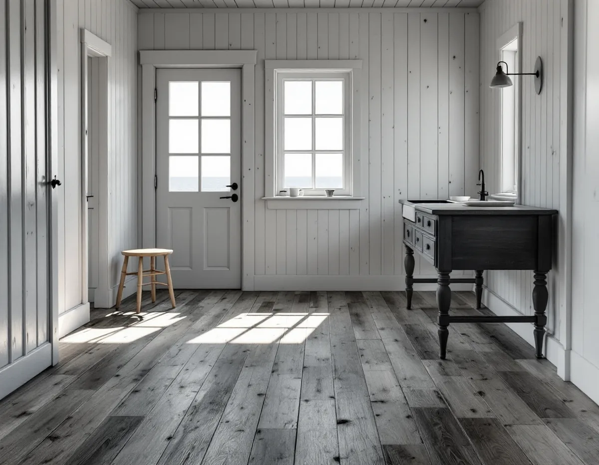
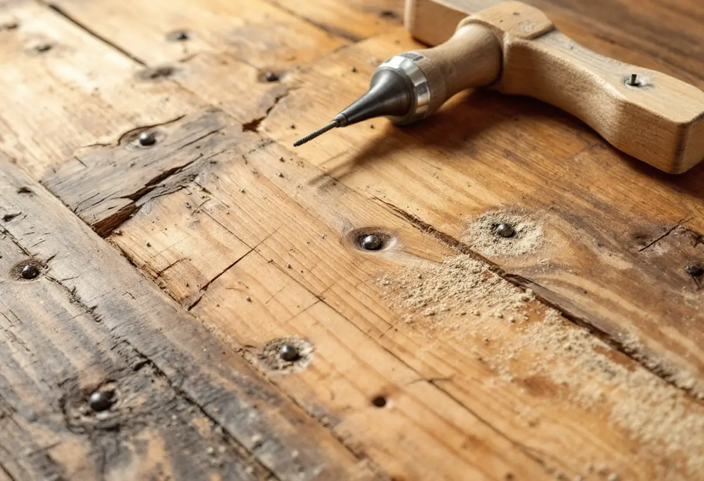
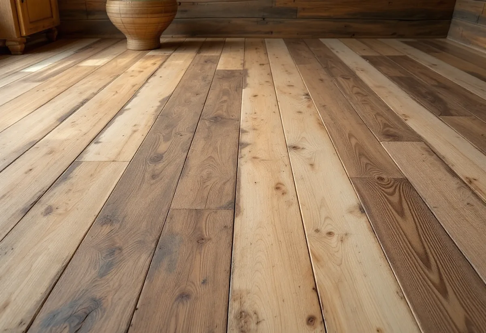

Platsbesök
Vi ser på golvets skick och vad det har behandlats med.
På Värmdö finns många äldre hus med breda brädgolv som har skurats, oljats eller målats i generationer. Ett sådant golv kan bli fint av en slipning, men det kan också förlora det som gör det värt att behålla. Geal Entreprenad AB slipar och behandlar trägolv på Värmdö och hjälper dig att välja hur hårt golvet ska tas.

SCB:s bostadsstatistik för 2025 räknar 12 789 lägenheter i småhus i Värmdö kommun. 945 av dem finns i hus byggda före 1931, 441 i hus från 1931–1940 och 670 i hus från 1941–1950. Lägg till 861 från 1950-talet, så finns drygt 2 900 småhusbostäder på Värmdö i hus byggda före 1961.
Värmdö kommun skriver att det finns 14 områden av riksintresse för kulturmiljövården i kommunen och cirka 55 utpekade kulturmiljöområden, och att alla dessa räknas som särskilt värdefulla. Kommunantikvarien hjälper gärna till med råd, och kommunen rekommenderar att man fotograferar sin fastighet och hör av sig via mejl.

Värmdö kommun skriver att särskilt värdefulla byggnader och områden inte får förvanskas enligt plan- och bygglagen, oavsett om åtgärden kräver bygglov eller inte. Boverket förklarar att förvanskningsförbudet gäller vid alla ändringar, såväl exteriört som interiört. Det är de egenskaper som gör byggnaden särskilt värdefull som skyddas, och förbudet är inget förändringsförbud.
Kommunen skriver också att du behöver göra en anmälan och få startbesked om du ska underhålla en byggnad som är skyddad i detaljplan eller har särskilt bevarandevärde. Bor du i ett sådant hus tar vi reda på vad som gäller innan vi slipar ett golv som kan vara en del av husets värde.
En läsare skrev till Svenska Byggnadsvårdsföreningen om ett grangolv från 1890-talet som en gång varit skurgolv och sedan oljats, och som nu var grått och trist. Svaret var att ett grangolv åldras till silvergrått, och att en slipning förstör det smutsavvisande skiktet och ger ett dött golv utan slitage. Föreningen föreslog att leva med golvhistorien och fortsätta med såpa, med kallt vatten. Är ytan uppsprucken så att det blir stickor i fötterna är en slipning däremot befogad.
Det är ungefär så vi resonerar på Värmdö också. Är golvet friskt men grått föreslår vi rengöring och skurning i stället för slipning. Är det skadat, flagnande eller fullt av gammal lack slipar vi så skonsamt som möjligt och tar bara bort det som behövs.
Golvbranschens riktlinjer SLIP 22 säger att eventuella spikar ska tas bort före slipning, eftersom de kan förstöra pappret och ge gnistor med risk för dammexplosion i slipdammpåsen. Sticker spikhuvuden upp i ett gammalt brädgolv går vi över hela ytan och sänker eller drar dem innan vi börjar.
Grovslipningen ska enligt riktlinjerna ta bort all tidigare ytbehandling och jämna till golvet, och kornstorleken på startpappret avgörs av golvets skick. Ett brett furu- eller grangolv som bara ska fräschas upp behöver inte nödvändigtvis det grövsta pappret. Vill du hellre lägga ett nytt golv finns mer under golvläggare på Värmdö.

Vi ser på golvets skick och vad det har behandlats med.
Vi tar reda på om huset är skyddat eller särskilt värdefullt.
Rengöring, slipning och ytbehandling var för sig.
Spikar sänks eller dras och lister lossas.
Så lite som golvet kräver, med rätt papper.
Såpa, olja, linoljefärg eller lack efter ditt val.
Skatteverket räknar slipning av golv som rotarbete i ett småhus, och till småhus räknas enligt Skatteverket också fritidshus. Huset ska användas som bostad och ägas av dig. Är bostaden yngre än fem år får arbetet bara återställa det ursprungliga skicket.
Avdraget är högst 30 procent av arbetskostnaden, som mest 50 000 kronor per person och år, och rot och rut får tillsammans vara högst 75 000 kronor. Material och resor ger inget avdrag. Geal drar avdraget direkt på fakturan.
Golvytan, golvets skick och tidigare behandling, hur många spikar som behöver tas om hand, vilken ytbehandling du väljer och var på Värmdö huset ligger. Efter ett gratis platsbesök får du ett skriftligt kostnadsförslag.
Parkett, trägolv, klinker och slipning.
Golvläggning i Stockholm →Takbyte, takbesiktning och plåtarbeten.
Takläggare på Värmdö →Skärgård, vind och fritidshus.
Takrenovering på Värmdö →Fritidsområden, kulturmiljö och avlopp.
Attefallshus på Värmdö →Brunnsvatten, salt och eget avlopp.
Badrumsrenovering på Värmdö →Byggrätt, PFO-områden och strandskydd.
Byggföretag på Värmdö →Röd panel, vita snickerier och båthus i skärgårdsbyarna.
Fasadmålning på Värmdö →Sommarvillor, skyddade hus och helårsboende.
Fasadrenovering på Värmdö →Gustavsbergs bevarandevärda fönster.
Fönsterbyte på Värmdö →Glasverandor och äldre fönster.
Fönsterrenovering på Värmdö →Fritidshus som blir permanentbostäder.
Golvläggare på Värmdö →Fritidshus, eget avlopp och Gustavsberg.
Köksrenovering på Värmdö →Skärgårdshus, fritidshus och bruksmiljö på Värmdö.
Målare på Värmdö →Plåttak och beslag på Värmdö.
Plåtslagare på Värmdö →Fritidshus som blir helårshus.
Snickare på Värmdö →Anmälan, kulturmiljö och tak i skärgårdsbyarna.
Takbyte på Värmdö →Riva eller spara tapetlagren.
Tapetsering på Värmdö →Fritidshusplaner och lovfria 30 m².
Tillbyggnad på Värmdö →VVS, varmvattnet och byggreglerna.
Totalrenovering på Värmdö →